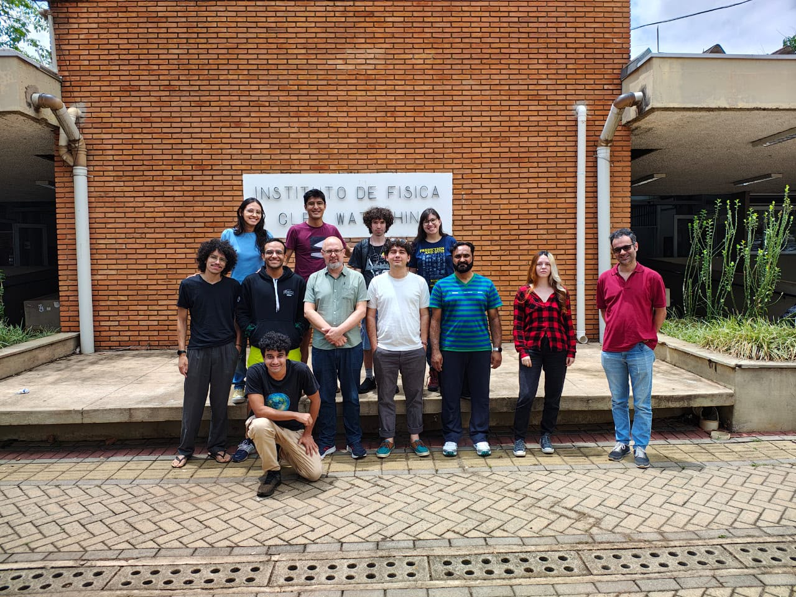

GRUPO DE PESQUISA · [INSTITUIÇÃO]
Ciência na fronteira da
informação quântica.
Investigamos os fundamentos da informação e da computação quântica, formando pesquisadores e desenvolvendo conhecimento para novas tecnologias.

01 / SOBRE
Ciência na fronteira do conhecimento.
O [Nome do Grupo] reúne pesquisadores dedicados a compreender e desenvolver novas formas de processar informação usando os princípios da mecânica quântica.
Insira aqui uma apresentação breve do grupo, sua história, vínculo institucional e principais contribuições. Este espaço foi pensado para comunicar impacto sem perder a clareza.
02 / PESQUISA
Linhas de pesquisa
Problemas fundamentais.
Soluções de longo alcance.
03 / PESSOAS
Quem faz a pesquisa
Uma equipe interdisciplinar
movida por curiosidade.
Professores & pós-docs
Estudantes
04 / PUBLICAÇÕES
Pesquisa publicada
Resultados que atravessam
teoria e aplicação.
05 / CONTATO
Vamos conversar sobre
o que vem depois?
E-mailgrupo@universidade.br
Endereço[Departamento / Instituto]
[Universidade]
[Cidade — UF]